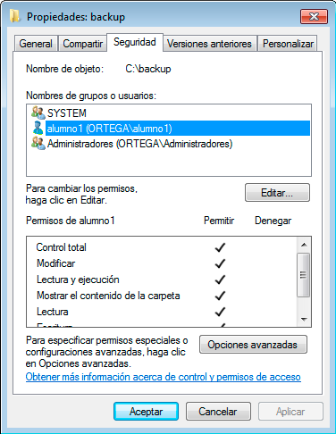
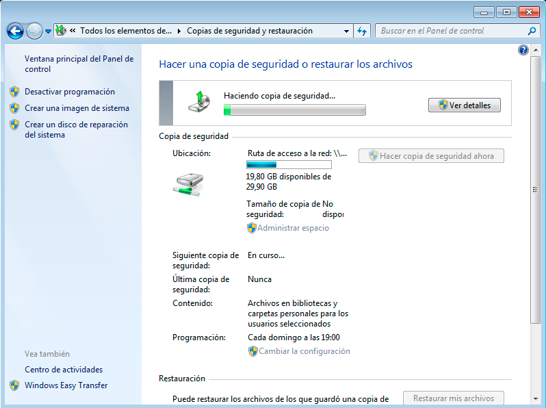
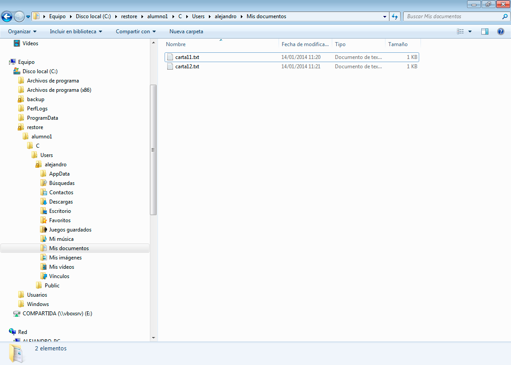
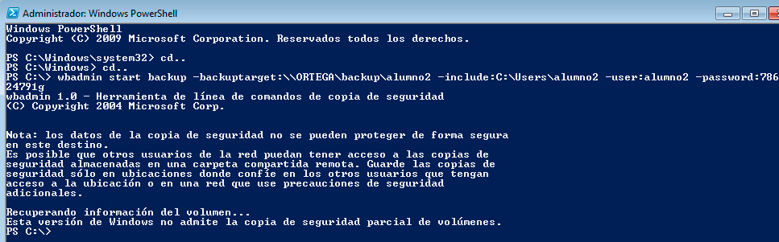

1.1- Configurar el equipo con las siguientes características:
- SO: Windows 7 y/o Windows 2008 Server
- IP: 172.16.108.1XX (donde XX corresponde al nº de cada puesto, 05 en este caso)
- Máscara de red: 255.255.0.0
- Gateway: 172.16.1.1
- Servidor DNS: 172.16.1.1
Imagen 1: Captura de pantalla de Windows 7 mostrando la configuración IP.
- Nombre de equipo: primer-apellido-del-alumno (ortega, en este caso)
- Grupo de trabajo: AULA108
Imagen 2: Captura de pantalla de Windows 7 mostrando el nombre del equipo.
- Tarjeta de red VBox en modo puente.
- Instalar Cygwin con el servidor OpenSSH.
NOTA 1:
- En el caso de trabajar con WXP podremos hacer la copia de seguridad en una carpeta c:\backup dentro del propio SO.
- En el caso de W7/W2008server, parece que nos obliga a que la copia de seguridad se realice en un almacenamiento externo. Para ello podemos crear la carpeta c:\backup, y la definimos accesible por la red. Permisos de la carpeta compartida lectura/escritura y con usuario remoto. ¡OJO la carpeta compartida por red puede estar en la misma máquina!
- Otra posibilidad sería la de añadir un 2º disco duro a la MV de W7 a ver si deja realizar el backup en este 2º disco.
 Principio del Punto 1.1
Principio del Punto 1.1 |
Principio del Bloque 1 |
 Fin del punto 1.2
Fin del punto 1.2 |
 Principio
Principio
1.2- Copia en entorno gráfico (GUI)
- Con el ususario alumno1, crear dos archivos de texto: carta11.txt y carta12.txt
- Crearemos los siguientes directorios;
- C:\backup\alumno1, lo utilizaremos para almacenar las copias de seguridad que vayamos realizando de momento.
- C:\restore\alumno1, lo usaremos para las pruebas de restauración.
- Comprobar permisos: las carpetas de backup (C:\backup\alumno1 y C:\restore\alumno1). Éstas deben tener todos los permisos para usuario "alumno1", y para el grupo "Admnistradores".

Imágenes 3 y 4: Capturas de pantalla mostrando los permisos de la carpeta backup del grupo Administradores y del usuario alumno1.
- Copia de seguridad: usar la herramienta de entorno gráfico que proporciona el sistema operativo (Panel de control > Copias de seguridad y restauración). Realizar una copia de seguridad total, con el nombre "C:\backup\alumno1\copia-1-total.bkf". La copia contendrá el directorio del usuario alumno1 (C:\User\Alumno1).
NOTA 2:
- En el caso de Windows 7 y Windows2008 Server la carpeta donde se va a ubicar la copia de seguridad debe ser un recurso compartido de red (carpeta compartida).
- Tanto en el caso de Windows 7 como Windows2008 Server no se permite renombrar la copia de seguridad, que recibe el nombre del equipo (ORTEGA en este caso).
Imagen 5: Selección de la carpeta compartida donde se ubicará la copia.

Imágenes 6 y 7: Windows 7 permite seleccionar qué archivos se van a guardar en la copia de seguridad.

Imágenes 8 y 9: Realización de la copia de seguridad y resultado de la misma.
- Restaurar la copia de seguridad total en C:\restore\alumno1.
Imágenes 10 y 11: Selección de la copia a restaurar y de la carpeta donde se realizará.

Imagen 12: Resultado de la restauración de la primera copia.
- Realizaremos los siguientes cambios: modificar el contenido del fichero carta11.txt.Eliminar el archivo carta12.txt, y crear un nuevo archivo carta13.txt.
- Realizar una copia de seguridad incremental con el nombre C:\backup\alumno1\copia-2-incremental.bkf.
- Comprobar el contenido de la copia incremental restaurando el contenido en C:\restore\alumno1.
NOTA 3:
Tanto Windows 7 como Windows 2008 Server no permiten elegir el tipo de copia de seguridad a realizar (normal, incremental o diferencial), por lo que en este caso se realizó otra copia de seguridad total con los datos del alumno1. Posteriormente al intentar restaurar la copia se puede observar que la aplicación permite elegir entre las fechas de las diferentes copias realizadas a la hora de seleccionar qué archivos se recuperan.
Imagen 13: Captura de pantalla de la segunda restauración de Windows 7.
Como resultado de la segunda restauración de la copia de seguridad 2 ORTEGA se obtienen tanto el archivo eliminado carta12.txt, como el documento carta11.txt (modificado) y carta13.txt (nuevo).
- Restaurar únicamente el fichero borrado (carta12.txt) desde la copia de seguridad a su lugar original.
Imagen 14: Selección de los archivos a restaurar de la copia de seguridad.
Imagen 15: Archivo carta12.txt restaurado.
- Programar una copia de seguridad del directorio personal de datos del usuario alumno1 (C:\Users\alumno1). A las 11:00 horas de lunes a viernes.
NOTA 4:
Tanto Windows 7 como Windows2008 Server sólo permiten programar copias diarias, semanales o mensuales. No permiten establecer un rango de tiempo que se salga de estos intervalos. Se escogió por lo tanto una programación semanal que se realizará todos los viernes a las 15:00.
Imagen 16: Programación temporal de la copia de seguridad.
Principio del Punto 1.2 |
Principio del Bloque 1 |
Fin del punto 1.3 |
Principio
1.3- Copia por comandos
- Con el usuario alumno2, crear dos archivos de texto: carta21.txt y carta22.txt. Usar el comando "attrib" para consultar los atributos asociados a estos ficheros. Capturar pantalla.
Imagen 17: Documentos carta21.txt y carta22.txt creados. Se muestran sus atributos con el comando "attrib".
- Crearemos los siguientes directorios;
- C:\backup\alumno2, lo utilizaremos para almacenar las copias de seguridad que vayamos realizando de momento.
- C:\restore\alumno2, lo usaremos para las pruebas de restauración.
- Comprobar permisos: las carpetas de backup (C:\backup\alumno2 y C:\restore\alumno2). Estas deben tener todos los permisos para usuario "alumno2", y para el grupo "Admnistradores".
Imagen 18: Creación de las carpetas backup y restore.
Imagen 19: Se muestran los permisos de backup y restore. El alumno2 y el grupo administradores tienen control total (F).
- Copia de seguridad: realizar una copia de seguridad total, con el nombre "C:\backup\alumno2\copia-1-total.bkf". La copia contendrá el directorio del usuario alumno2 (C:\User\Alumno2).
NOTA 5: A la hora de realizar por comandos la copia de seguridad en SO Windows se pueden optar por varios procedimientos:
- Windows XP proporciona el comando ntbackup para hacer copias de seguridad. Veamos un ejemplo: ntbackup backup "C:\Documents and Settings\alumno2" /F C:\backup\alumno2\backup.bkf /V:yes. Esta opción no existe en Windows 7 y Windows 2008 Server.
- Windows 7 y Windows 2008 Server proporciona el comando wbadmin para manejar copias de seguridad.
- Otra posibilidad, usar los mismos comandos de GNU/Linux en Windows a través de la herramienta Cygwin.
1.3.1.- Copia de seguridad mediante la utilización de "wbadmin"
NOTA 6:
Para realizar la copia de seguridad se utilizó la expresión
"wbadmin start backup -backuptarget:\\ORTEGA\backup\alumno2 -include:C:\Users\alumno2 -user:alumno2 -password:78624791g" de la cual se puede indicar lo siguiente:
- wbadmin start backup -> comando que permite realizar la copia de seguridad.
- Parámetros:
- -backuptarget: debe ir seguido por el directorio donde va a guardarse la copia de seguridad que, como en el caso anterior por entorno gráfico, debe ser un recurso de red (carpeta compartida).
- -include: los directorios o unidades que van a incluirse en la copia de seguridad. En este caso sólo la carpeta personal de alumno2 (C:\Users\alumno2).
- -user y -password: para añadirle un usuario y contraseña de seguridad a la copia.

Imagen 20: Intento de copia de seguridad mediante wbadmin.
- Se comprueba que en Windows 7 no está permitido realizar copias parciales mediante la utilización del comando wbadmin.
- Sí es posible hacer copias de seguridad totales de una unidad al completo (C, en este caso) mediante la utilización del comando wbadmin.
Imagen 21: Copia de seguridad total de la unidad C mediante wbadmin.
Imagen 22: Ficheros y directorios generados por la copia de seguridad total de la unidad C mediante wbadmin.
- Al intentar restaurar la copia de C realizada mediante el comando wbadmin start systemstaterecovery se comprueba que en Windows 7 no lo permite.
Imagen 23: Intento de restauración mediante wbadmin start systemstaterecovery.
1.3.2.- Copia de seguridad mediante la herramienta Cygwin
- Copia de seguridad: usaremos comandos como tar y zip. Vamos realizar la copia de seguridad de la carpeta personal del usuario alumno2 (C:\Users\alumno2).
NOTA 7:
Para realizar la copia de seguridad se utilizó la expresión "tar -jcvf /cygdrive/c/backup/alumno2/CopiaTotal_users-alumno2_21ene2014.tar.bz2 /cygdrive/c/users/alumno2". La explicación de ésta viene recogida en la NOTA 14 del apartado 2.3.-Copia de seguridad por comandos en GNU/Linux.

Imagen 24: Crear copia de seguridad con tar.
Imagen 25: Archivo de copia de seguridad creado en C:\backup\alumno2.
- Restaurar la copia de seguridad en C:\restore\alumno2.
NOTA 8:
Para restaurar la copia de seguridad se utilizó la expresión "tar -jxvf /cygdrive/c/backup/alumno2/CopiaTotal_users-alumno2_21ene2014.tar.bz2". La explicación de ésta viene recogida en la NOTA 15 del apartado 2.3.-Copia de seguridad por comandos en GNU/Linux.
Imagen 26: Restaurar la copia de seguridad.
Imagen 27: Copia de C:\Users\alumno2 restaurada con éxito en C:\restore\alumno2.
- Realizaremos los siguientes cambios: modificar el contenido del fichero carta21.txt. Eliminar el archivo carta22.txt, y crear un nuevo archivo carta23.txt.
NOTA 9:
- El fichero carta22.txt se eliminó utilizando el comando rm.
- El fichero carta23.txt se creó usando el comando touch.
Imagen 28: Realización de las modificaciones indicadas empleando rm y touch.
- Restaurar únicamente el archivo eliminado (carta22.txt) a partir de la copia de seguridad.
NOTA 10:
Para restaurar el fichero carta22.txt que se eliminó, se utilizó la expresión "tar -jxvf /cygdrive/c/backup/alumno2/CopiaTotal_users-alumno2_21ene2014.tar.bz2 cygdrive/c/Users/alumno2/Documents/carta22.txt". La explicación de ésta viene recogida en la NOTA 17 del apartado 2.3.-Copia de seguridad por comandos en GNU/Linux.
Imagen 29: Archivo carta22.txt eliminado, restaurado con éxito en C:\restore\alumno2.
Principio del Punto 1.3 |
Principio del Bloque 1 |
Principio
2.1- Configurar el equipo con las siguientes características:
- SO: OpenSUSE 13.1
- IP: 172.16.108.2XX (donde XX corresponde al nº de cada puesto, 05 en este caso)
- Máscara de red: 255.255.0.0
- Gateway: 172.16.1.1
- Servidor DNS: 172.16.1.1
- Nombre de equipo (host): primer-apellido-del-alumno (ortega, en este caso)
Imágenes 30 y 31: Captura de pantalla de Yast mostrando la configuración de la IP y el nombre del equipo.
Imagen 32: Captura de pantalla de Yast mostrando la puerta de enlace predeterminada (gateway).
- Tarjeta de red VBox en modo puente.
- Instalar Cygwin con el servidor OpenSSH.
Principio del Punto 2.1 |
Principio del Bloque 2 |
Fin del punto 2.2 |
Principio
2.2- Copia en entorno gráfico (GUI)
- Con el ususario profesor1, crear dos archivos de texto: manual11.txt y manual12.txt
- Crearemos los siguientes directorios;
- /var/backup/profesor1, lo utilizaremos para almacenar las copias de seguridad que vayamos realizando de momento.
- /var/restore/profesor1, lo usaremos para las pruebas de restauración.
- Comprobar permisos: el usuario propietario será profesor1, y el grupo root. Todos los permisos para usuario y grupo. Ninguno para el resto.
NOTA 11:
- Los directorios están creados desde el terminal usando el comando mkdir.
- Se cambia el propietario de los directorios para que sea profesor1 usando el comando chown.
- Se cambian los permisos de los directorios de tal manera que el usuario profesor1 y el grupo root tengan todos los permisos y ninguno el resto. Para ello se usa el comando chmod.
Imagen 33: Captura de pantalla que muestran los permisos de los directorios /var/backup/profesor1 y /var/restore/profesor1.
- Copia de seguridad: para realizar la copia de seguridad se emplea la herramienta Back in Time (backintime.le-web.org). Realizar la copia del home completo del usuario profesor1 (/home/profesor1).
NOTA 12:
- Otros ejemplos de herramientas de backup:
- Areca Backup (www.areca-backup.org)
- Amanda (www.amanda.org)
- Bacula (www.bacula.org/en)
- BackupPC (nackuppc.sourceforge.net/index.html)
- Déjà Dup (mterry.name/deja-dup)
- Duplicity (duplicity.nongnu.org)
- Flyback (flyback-project.org)
- luckyBackup (luckybackup.sourceforge.net)
- Remastersys (www.remastersys.klikit-linux.com)
- Rsync (rsync.samba.org)
- Time Vault (launchpad.net/timevault)
Imágenes 34 y 35: Captura que muestra la ubicación de la copia de seguiridad (/var/backup/profesor1) y los directorios incluidos en la copia (/home/profesor1).
- Back in Time llama a las copias de seguridad "Instantáneas".
Imagen 36: Copia de seguridad hecha a fecha del 13-01-2014.
Imagen 37: Muestra de como se presenta la copia de seguridad en el navegador de archivos.
- Restaurar la copia de seguridad en /var/restore/profesor1.
Imagen 38: Restauración de la copia de seguridad.
Imagen 39: Copia restaurada en /var/restore/profesor1.
- Realizaremos los siguientes cambios: modificar el contenido del fichero carta11.txt.Eliminar el archivo carta12.txt, y crear un nuevo archivo carta13.txt.
- Restaurar únicamente el archivo eleminado a partir de la copia de seguridad.
Imágenes 40 y 41: Proceso para restaurar carta12.txt eliminada previamente.
Imagen 42: Fichero carta12.txt restaurado.
- Programar una copia de seguridad del home del usuario profesor1. A las 11:00 horas de lunes a viernes.
NOTA 13:
Back in Time no permite programar copias con el intervalo de tiempo indicado en la práctica. Se escogió por lo tanto una programación semanal que se realizará todos los viernes a las 15:00.
Imagen 43: Programación semanal de la copia de seguridad.
Principio del Punto 2.2 |
Principio del Bloque 2 |
Fin del punto 2.3 |
Principio
2.3- Copia por comandos
- Con el usuario profesor2, crear dos archivos de texto: manual21.txt y manual22.txt. Para ello se utiliza el comando touch como se muestra en la siguiente imagen.
Imagen 44: Crear los ficheros manual21.txt y manual22.txt.
- Crear los siguientes directorios:
- /var/backup/profesor2, lo utilizaremos para almacenar las copias de seguridad que vayamos realizando de momento.
- /var/restore/profesor2, lo usaremos para las pruebas de restauración.
- Para crear las carpetas se utiliza el comando mkdir como se muestra en la imagen.
Imagen 45: Crear los directorios backup y restore.
- Comprobar permisos: el usuario propietario será profesor2, y el grupo root. Todos los permisos para usuario y grupo. Ninguno para el resto. Para cambiar el usuario propietario de las carpetas se usa el comando chwon y para cambiar los permisos, el comando chmod como se muestra en las siguientes imágenes.
Imagen 46: Cambio de permisos y usuario propietario del directorio /var/backup/profesor2.
Imagen 47: Cambio de permisos y usuario propietario del directorio /var/restore/profesor2.
- Copia de seguridad: usaremos comandos como tar y zip. Vamos realizar la copia de seguridad del home completo del usuario profesor2 (/home/profesor2).
NOTA 14:
Para realizar la copia de seguridad se utilizó la expresión
"tar -jcvf /var/backup/profesor2/CopiaTotal_home-profesor2_20ene2014.tar.bz2 /home/profesor2" de la cual se puede indicar lo siguiente:
- tar -> comando que permite crear un único archivo que contenga todos los datos seleccionados y además, permite comprimirlos en diferentes formatos y posteriormente descomprimir.
- Parámetros:
- j: comprimir usando compresión tipo bzip2.
- c: create, indica que se va a crear un archivo nuevo.
- v: verbose, elimina la barra inclinada (/) inicial de los archivos incluidos en el empaquetado.
- f: file, escribir hacia un archivo
- /var/backup/profesor2/ -> dirección absoluta donde se va a ubicar la copia de seguridad.
- CopiaTotal_home-profesor2_20ene2014.tar.bz2 -> nombre del archivo de la copia de seguridad. Este nombre incluye:
- CopiaTotal -> tipo de copia de seguridad realizada, en este caso, una copia total.
- home-profesor2 -> los directorios incluidos en la copia de seguridad, en este caso /home/profesor2
- 20ene2014 -> fecha de realización de la copia de seguridad.
- /home/profesor2 -> carpetas incluidas en la copia de seguridad, en este caso sólo /home/profesor2.
Imagen 48: Crear copia de seguridad con tar.
Imagen 49: Archivo de copia de seguridad creado en /var/backup/profesor2.
- Restaurar la copia de seguridad en /var/restore/profesor2.
NOTA 15:
Para restaurar la copia de seguridad se utilizó la expresión
"tar -jxvf /var/backup/profesor2/CopiaTotal_home-profesor2_20ene2014.tar.bz2" de la cual se puede indicar lo siguiente:
- tar -> comando que permite crear un único archivo que contenga todos los datos seleccionados y además, permite comprimirlos en diferentes formatos y posteriormente descomprimir.
- Parámetros:
- j: indica que la compresión usada es tipo bzip2.
- x: extract, indica que se va a descomprimir un archivo.
- v: verbose.
- f: file, extraer desde un archivo.
- /var/backup/profesor2/ -> dirección absoluta donde se ubica la copia de seguridad.
- CopiaTotal_home-profesor2_20ene2014.tar.bz2 -> nombre del archivo de la copia de seguridad.
Imagen 50: Restaurar la copia de seguridad.
Imagen 51: Copia del /home/profesor2 restaurada con éxito en /var/restore/profesor2.
- Realizaremos los siguientes cambios: modificar el contenido del fichero manual21.txt. Eliminar el archivo manual22.txt, y crear un nuevo archivo manual23.txt.
NOTA 16:
- El fichero manual22.txt se eliminó utilizando el comando rm.
- El fichero manual21.txt se modificó utilizando la herramienta nano.
- El fichero manual23.txt se creó usando el comando touch.
Imagen 52: Realización de las modificaciones indicadas empleando rm, touch y nano.
- Restaurar únicamente el archivo eliminado (manual22.txt) a partir de la copia de seguridad.
NOTA 17:
Para restaurar el fichero manual22.txt que se elimnió se utilizó la expresión
"tar -jxvf /var/backup/profesor2/CopiaTotal_home-profesor2_20ene2014.tar.bz2 home/profesor2/manual22.txt" de la cual se puede indicar lo siguiente:
- tar -> comando que permite crear un único archivo que contenga todos los datos seleccionados y además, permite comprimirlos en diferentes formatos y posteriormente descomprimir.
- Parámetros:
- j: indica que la compresión usada es tipo bzip2.
- x: extraer, indica que se va a descomprimir un archivo.
- v: verbose.
- f: file, extraer desde un archivo.
- /var/backup/profesor2/ -> dirección absoluta donde se ubica la copia de seguridad.
- CopiaTotal_home-profesor2_20ene2014.tar.bz2 -> nombre del archivo de la copia de seguridad.
- home/profesor2/manual22.txt -> dirección dentro del archivo tar de la copia de seguridad donde se ubica manual22.txt
Imagen 53: Archivo manual22.txt eliminado restaurado con éxito en /var/restore/profesor2/home/profesor2.
Principio del Punto 2.3 |
Principio del Bloque 2 |
Principio
Alejandro Ortega Freire 1ºASIR
Implantación de Sistemas Operativos